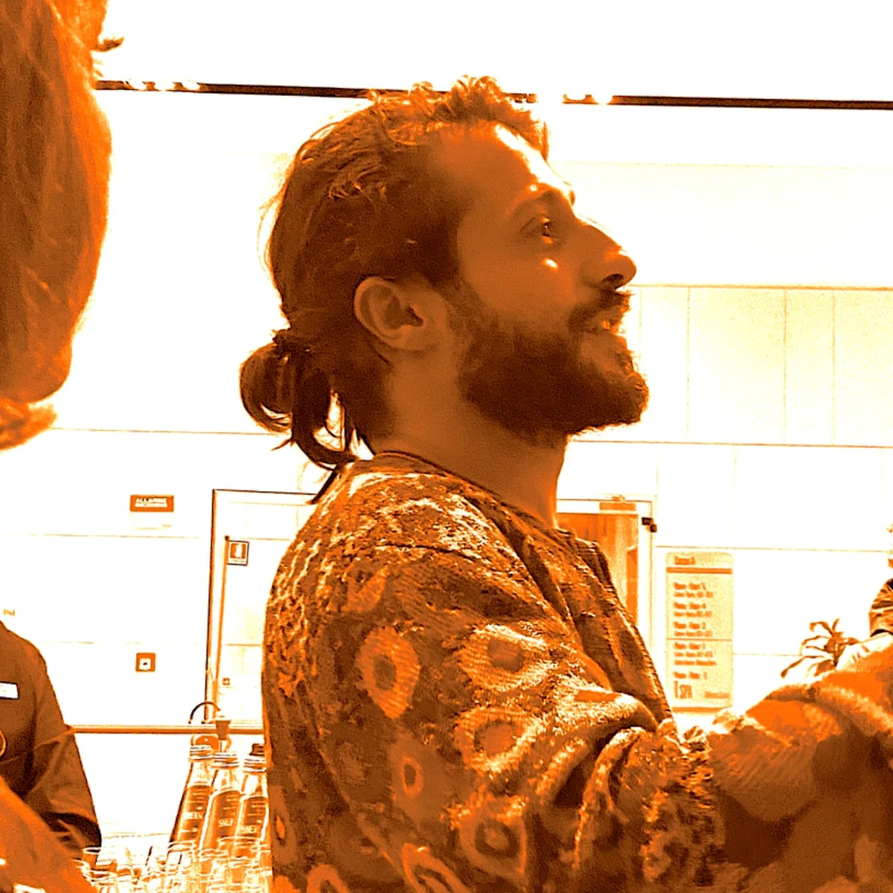
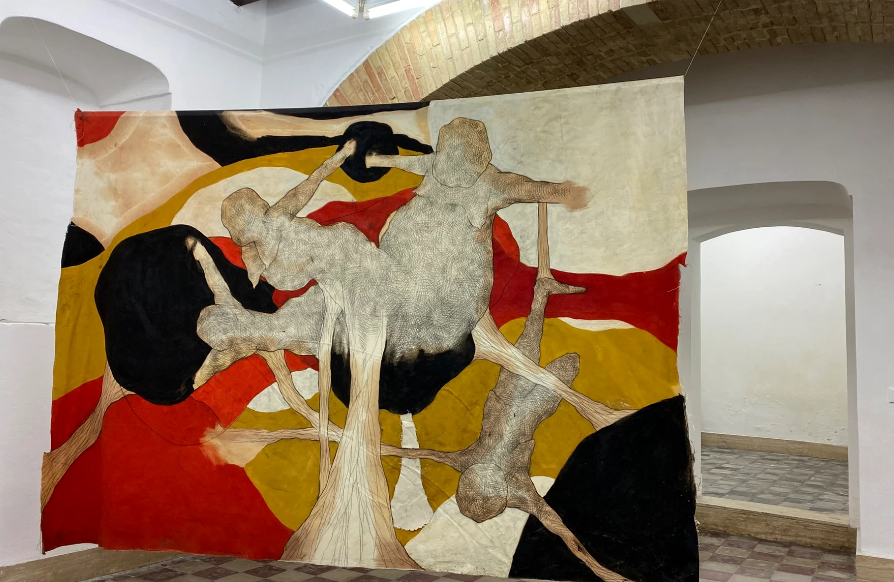

Comprendere prima di progettare
Contesto, utenti e criticità vengono prima della soluzione visiva.
About
Sono Gianni Carta, UX/UI designer con una formazione accademica nella pittura e nelle arti visive. Integro sensibilità visiva, ricerca e pensiero progettuale per costruire interfacce comprensibili, accessibili e coerenti.

01 · Profilo
Il mio percorso nasce dalla pittura e dalle arti visive, dove ho sviluppato attenzione per composizione, gerarchie, percezione e relazione tra forma e contenuto.
Successivamente ho orientato queste competenze verso la UX/UI, approfondendo ricerca utente, accessibilità, architettura dell’informazione, wireframing, prototipazione e progettazione responsive.
La formazione artistica continua a influenzare il mio modo di progettare: cerco strutture essenziali senza eliminare identità e carattere.
02 · Approccio
Contesto, utenti e criticità vengono prima della soluzione visiva.
Contenuti e azioni devono costruire percorsi leggibili e prevedibili.
Contrasto, gerarchia, focus, semantica e leggibilità sono parte del processo.
Feedback e revisioni servono a rendere più solida ogni soluzione.
03 · Skills
Research, benchmark, personas, user journey, information architecture, user flow.
Wireframing, design system, componenti, prototipazione, responsive design.
Figma, FigJam, HTML, CSS, SCSS, Git, GitHub, Adobe Creative Suite, WebAIM.

Arte e design
La pratica artistica e la progettazione digitale condividono per me lo stesso punto di partenza: osservare, interpretare e dare una forma comprensibile a qualcosa di complesso.Portfolio artistico ↗
04 · Percorso
Ricerca, accessibilità, wireframing, UI design, prototipazione, HTML, CSS e SCSS.
Progettazione didattica, comunicazione e gestione di gruppi classe.
Triennio in Pittura e biennio specialistico in Pittura e Arti Visive.
Contact